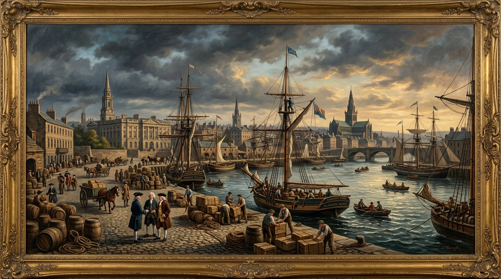

The Scottish Elite and the Empire
A Focused Exposé of the 1695 Darien Origins, Caribbean Plantation Monopolies, the 1833 Slave Compensation Payouts, and the Myth of Scottish Innocence.

Archival Audit: Scottish Complicity in Atlantic Slavery
Primary record evidence from the National Records of Scotland, the UCL Legacies of British Slavery Database, and university historical inquiries.
Scotland’s Structural Role in the Atlantic Slave Economy
Scotland did not enter the British Empire as a passive spectator. Its commercial and political leadership sought direct control of slave territories prior to Union and leveraged the post-1707 framework to dominate Caribbean plantation agriculture.
Scotland’s entry into the slave economy began in 1695, when the Scottish Parliament chartered the Company of Scotland Trading to Africa and the Indies. That moment was the first formal step into the Atlantic world of human exploitation. The Darien Scheme is remembered as a national tragedy, but its purpose was clear: Scotland wanted its own colony, its own access to slave‑produced wealth, its own place in the imperial economy. When Darien collapsed, the Scottish elite did not retreat from empire; they simply shifted their ambitions into the English system after the Union of 1707, where the machinery of slavery was already built and waiting.
In the mid‑eighteenth century, Glasgow’s merchant aristocracy had become one of the most powerful commercial forces in Britain. Men like John Glassford, whose mansion still stands in Glasgow, built fortunes on slave‑grown tobacco from Virginia and Maryland. They financed ships, insured cargoes, and controlled the flow of goods across the Atlantic. Their wealth was not abstract. It was measured in hogsheads of tobacco grown by enslaved Africans, shipped to the Clyde, and turned into Scottish prosperity for a narrow elite. The city’s rise was built on slavery, even though the enslaved never set foot on Scottish soil.
The next phase was ownership. By the late eighteenth century, Scots controlled a vast share of Jamaican plantations. The Stirlings of Keir owned estates worked by enslaved people whose labour funded the family’s Scottish properties. The Oswalds of Glasgow were tied to plantations that produced sugar and rum under conditions of relentless brutality. The Wedderburns were notorious even in their own time, involved in cases that exposed the violence of slavery to the British public. The Buchanans and Campbells folded Caribbean profits into Scottish estates, presenting themselves as civic leaders while hiding the source of their wealth. These families were not marginal figures. They were pillars of Scottish society, and their fortunes were built on human suffering.
The records of the National Records of Scotland show the truth in cold ink. Wills and testaments from the eighteenth and nineteenth centuries treat enslaved people as property, listed alongside land, livestock, and money. Deeds record the sale of enslaved individuals with names, prices, and conditions. One indenture from 1809 shows the sale of two enslaved women by Eliza Mines in Jamaica to Cunningham Buchanan, a transaction involving a Scottish merchant whose wealth flowed back into Glasgow. Another deed from 1833 records a transaction involving James Matthew Hodges in Antigua, tied to Scottish commercial networks. These documents are not stories. They are proof.
When slavery was abolished in the British Empire in the 1830s, the British state paid £20 million in compensation to slave owners. The enslaved received nothing. The compensation records show Scottish claimants with Edinburgh and Glasgow addresses, claiming money for dozens or hundreds of enslaved people. The Stirlings of Keir appear with claims that converted human lives into cash. The Baillies and Houstons took payouts that would be worth millions today. These payments were the final instalment of blood money handed to men who had owned other human beings and now demanded to be paid for losing them. The money flowed into Scottish estates, banks, and institutions. The enslaved were left with nothing but freedom without land, compensation, or support.
The cover‑up began immediately. The families who had profited from slavery commissioned biographies that celebrated their philanthropy and patriotism while erasing the brutality behind their wealth. Edinburgh University and Glasgow University accepted donations from slave‑derived fortunes and wrote official histories that praised enlightenment and progress without acknowledging the source of their benefactors money. Unionist political forces promoted a narrative of Scotland as a loyal partner in a civilising mission, celebrating Scottish regiments and administrators while ignoring the plantation owners and slave traders in their constituencies. Twentieth‑century historians wrote national histories that focused on internal politics and industrialisation, treating empire as something that happened elsewhere. Museums and councils preserved statues and street names without context, maintaining the physical legacy of slave‑derived wealth while erasing the human cost.
This exposé is dismantling of the myth that protected the powerful. It is the truth as far as the evidence allows: Scotland’s elite entered the slave economy in 1695, expanded their role after 1707, became major plantation owners by the late eighteenth century, took compensation in the 1830s, and then spent the next century burying the evidence. They were not victims. They were not passengers. They were partners in a system built on chains, violence, and death. Hiding the facts to escape the consequences.
Primary Sources & Archival References
Register of Deeds & Commissary Court Records: Indentures of Sale (Jamaica 1809, Antigua 1833). General Register House, Edinburgh.
Centre for the Study of the Legacies of British Slavery Database. Claims of Stirling of Keir, Baillie, and Houston dynasties.
Recovering Scotland's Slavery Past: The Caribbean Connection. Edinburgh University Press.
Slavery, Abolition and the University of Glasgow. Historical Audit & Reparative Justice Report.